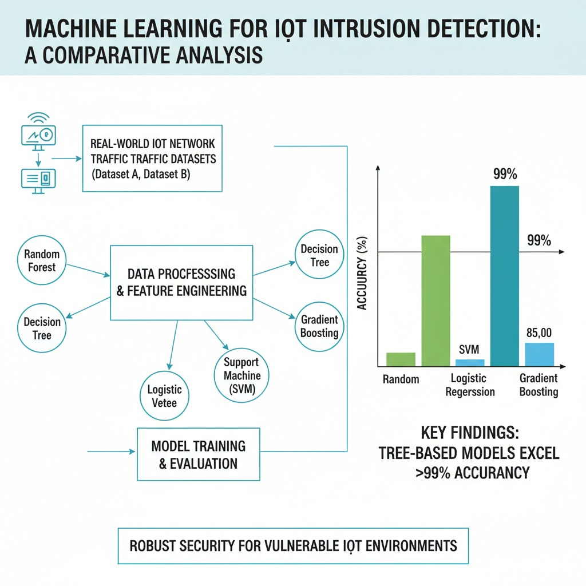
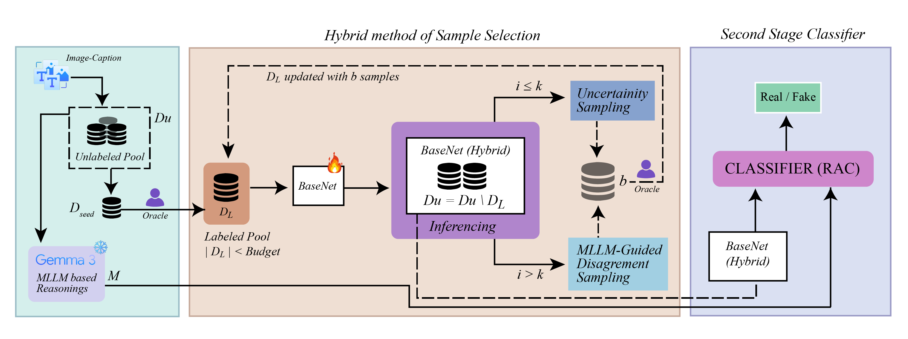

|
I am a Research Associate at the IACV Lab, IISc Bangalore, advised by Prof. Soma Biswas. My research centers on Large Language Models, with a particular focus on multimodal systems, visual reasoning, and document understanding. My work explores how to enhance the reasoning capabilities of language and vision models. Specifically, I have worked on:
Previously, I was a research intern at the LT Research Group, University of Hamburg, with Prof. Chris Biemann and Jan Strich, and a MITACS Globalink Research Intern at Dalhousie University. I completed my Bachelor of Engineering in Information Technology at Panjab University. During my undergraduate studies, I also worked as a machine learning research intern at IIT Roorkee and served as the ML/AI Lead at Google Developer Student Clubs. Research Interests: Multimodal and Multilingual Reasoning | Vision-Language Models | Interpretability of LLMs | Information Retrieval Hobbies: Outside of research, I enjoy traveling, reading, writing blogs, minimalist living, and tinkering with small experiments. I'm always happy to connect for a discussion or collaboration! |
Experience & Education


News
-
Nov 2025:Paper - Our paper Lost in Translation and Noise: A Deep Dive into Failure-Mode of VLLMs on Real-World Tables is accepted at EurIPS Workshop on AI for Tabular Data. (Oral 🎉)
-
Aug 2025:Paper - Our paper MTabVQA: Evaluating Multi-Tabular Reasoning of Language Models in Visual Space is accepted at EMNLP 2025 (Findings).
-
Aug 2025:Position - Started working as Research Associate at IACV Lab, IISc Bangalore.
-
May 2025:Paper - Our new preprint, MTabVQA: Evaluating Multi-Tabular Reasoning of Language Models in Visual Space, is now available on ArXiv.
-
Jan 2025:Position - Started a research internship at Language Technology Group, University of Hamburg, Germany.
-
Oct 2024:Position - Started working as undergraduate researcher at SMART Lab, Dalhousie University.
-
July 2024:Position - Selected for Mitacs Globalink Research Internship at Dalhousie University, Nova Scotia, Canada.
-
Nov 2023:Paper - Our work Comparative Analysis of State-of-the-Art Attack Detection Models was accepted at 14th International Conference on Computing Communication and Networking Technologies (ICCCNT).
-
June 2023:Position - Started a Machine Learning Research Intern at Virtual Labs, IIT Roorkee.
-
March 2022:Position - Started working as Project Intern at Design & Innovation Centre, Panjab University.
Research
|
MTabVQA: Evaluating Multi-Tabular Reasoning of Language
Models in Visual Space Anshul Singh, Chris Biemann, Jan Strich Empirical Methods of Natural Language Processing (EMNLP), 2025 Findings Paper / Dataset / Poster In this work, we address a critical gap in Vision-Language Model (VLM) evaluation by introducing MTabVQA, a novel benchmark for multi-tabular visual question answering. Our benchmark comprises 3,745 complex question-answer pairs that require multi-hop reasoning across several visually rendered table images, simulating real-world documents. We benchmark state-of-the-art VLMs, revealing significant limitations in their ability to reason over complex visual data. To address this, we release MTabVQA-Instruct, a large-scale instruction-tuning dataset. Our experiments demonstrate that fine-tuning with our dataset substantially improves VLM performance, bridging the gap between existing benchmarks that rely on single or non-visual tables. |
|
|  |
Comparative Analysis of
State-of-the-Art Attack Detection Models Priyanka Kumari, Veenu Mangat, and Anshul Singh 14th International Conference on Computing Communication and Networking Technologies (ICCCNT), 2023 Paper In this work, we address the growing security challenges in IoT networks by conducting a comprehensive comparative analysis of machine learning classifiers for intrusion detection. We evaluated five distinct models on two real-world IoT network traffic datasets to identify the most effective algorithms for detecting malicious activity. Our findings show that tree-based models, specifically Random Forest and Decision Trees, deliver outstanding performance, achieving accuracies exceeding 99%. This research provides a clear benchmark and practical guidance for developing robust and high-performance security systems to protect vulnerable IoT environments. |
|  |
HybridNet: LLM-Guided Active Learning for
Multimodal Fake News Detection Shreyas Kumar Tah, Lucky Gupta, Prajeet Katari, Anshul Singh et al. Preprint We propose HybridNet, a data-efficient framework that leverages hybrid active learning to select the most informative samples, drastically reducing labeling cost. We also propose a lightweight Reasoning-Aware Classifier (RAC) for challenging cases, which combines Vision–Language Model (VLM) features with reasoning from a Multimodal Large Language Model (MLLM) to further improve detection performance and provide human- interpretable explanations. |